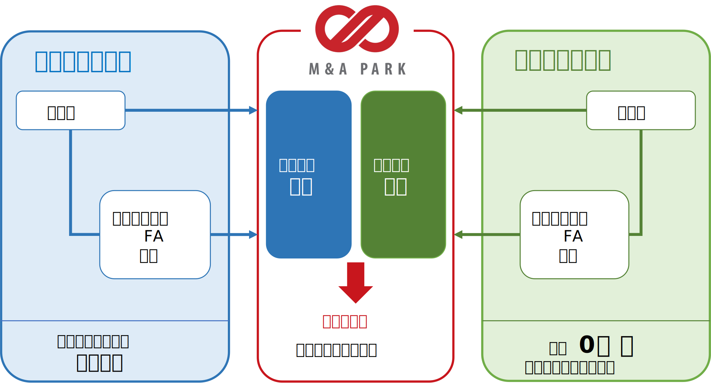
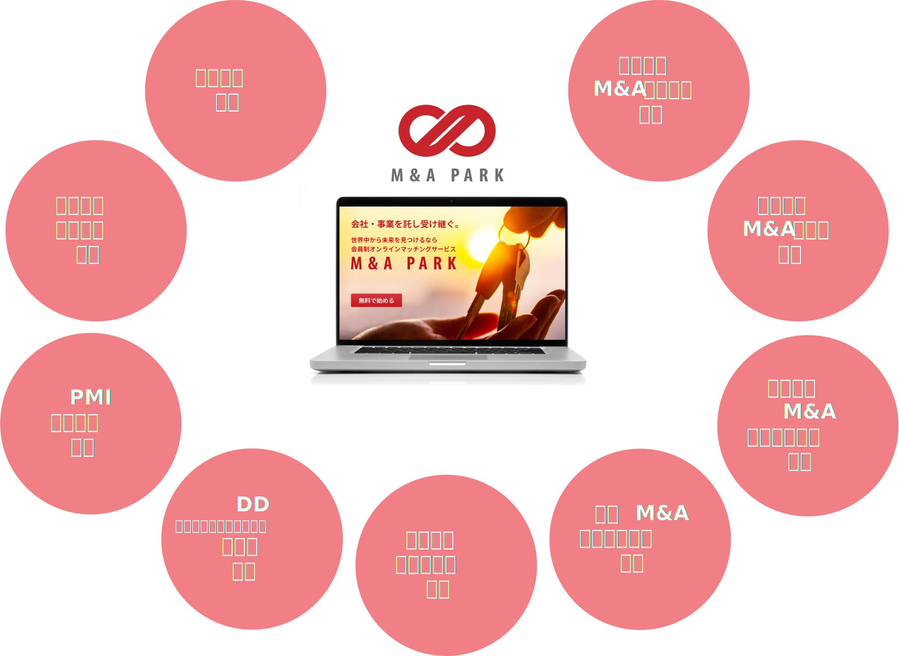
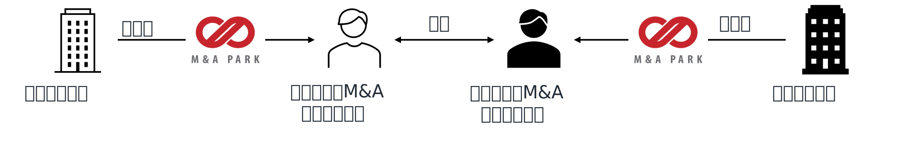

M&A PARKは、初めて事業承継・M&Aを考える方でも簡単にお使いいただける
小規模～中小企業向けのオンラインとオフラインのサービスを併せ持った
ハイブリッド総合支援型M&Aサービスです。
小規模～中小企業向けのオンラインとオフラインのサービスを併せ持った
ハイブリッド総合支援型M&Aサービスです。
オンラインの支援サービス

M&A PARK は、株式・事業の譲渡を検討している売り手企業様と、
譲り受けを検討している買い手企業様をつなぐオンラインプラットフォームです。
売り手企業様・買い手企業様ともに匿名で登録・利用することができます。
売り手企業様は会社や事業内容を譲渡案件として登録することで
譲り受けを検討している買い手企業様よりアプローチを受けることが可能です。
買い手企業様は自社のニーズを登録することで
譲渡を検討している売り手企業様より譲渡案件の提案を受けることが可能です。
譲り受けを検討している買い手企業様をつなぐオンラインプラットフォームです。
売り手企業様・買い手企業様ともに匿名で登録・利用することができます。
売り手企業様は会社や事業内容を譲渡案件として登録することで
譲り受けを検討している買い手企業様よりアプローチを受けることが可能です。
買い手企業様は自社のニーズを登録することで
譲渡を検討している売り手企業様より譲渡案件の提案を受けることが可能です。
世界中の経営者とマッチング
オンラインの強みは、オフラインでは出会うことができなかった、地域という垣根を越えた企業との出会いです。
もちろん地域の垣根だけでなく、業種も超えた企業や人と出会うことが出来ます。
弊社は、独自の世界中のネットワークを活用し、ここにしかない譲渡案件を多数掲載しております。
国内の経営者だけでなくアジアを中心とした世界中の経営者とマッチングが可能です。
ここでしか出会えない経営者同士を、M&A PARKがお繋ぎします。
もちろん地域の垣根だけでなく、業種も超えた企業や人と出会うことが出来ます。
弊社は、独自の世界中のネットワークを活用し、ここにしかない譲渡案件を多数掲載しております。
国内の経営者だけでなくアジアを中心とした世界中の経営者とマッチングが可能です。
ここでしか出会えない経営者同士を、M&A PARKがお繋ぎします。

オフラインの支援サービス
安心のサポート体制
初めての事業承継・M&Aの成功をサポートする支援体制が充実しています。

M&Aを進めるにあたり、様々な不安に対し
弊社では例えば以下のようなサポート体制を整えております。
弊社では例えば以下のようなサポート体制を整えております。
- ① M&Aを検討しているけれど何から始めたらいいのかわからない...
- ② どのデューデリジェンスを行えばよいかわからない...
- ③ M&A成約後の統合プロセスがうまくいかず、シナジー効果が低い...
① 事業承継・M&Aアドバイザー支援
事業承継・M&Aアドバイザーは、 事業承継・M&Aの重要な部分をサポートする為、
経営を理解する事はもちろんのこと、財務会計・税務・法律など幅広い知識を有した
経験豊富なアドバイザーをお選びいただくことが重要です。
M&A PARKでは、日本全国６００以上の士業を中心とした
経験豊富な事業承継・M&Aアドバイザーと連携しております。
M&A PARKにご相談いただければ、
全国どこでもお近くのアドバイザーをご紹介することができます。
また、アジアを中心とした海外M&Aをサポートするアドバイザーの紹介も可能です。
事業承継・M&Aを進める際、 ご自身で対応する事が難しくなる局面も、
専門家が伴走することでリスクを最小限に抑え交渉をスムーズに進めていただけます。
経営を理解する事はもちろんのこと、財務会計・税務・法律など幅広い知識を有した
経験豊富なアドバイザーをお選びいただくことが重要です。
M&A PARKでは、日本全国６００以上の士業を中心とした
経験豊富な事業承継・M&Aアドバイザーと連携しております。
M&A PARKにご相談いただければ、
全国どこでもお近くのアドバイザーをご紹介することができます。
また、アジアを中心とした海外M&Aをサポートするアドバイザーの紹介も可能です。
事業承継・M&Aを進める際、 ご自身で対応する事が難しくなる局面も、
専門家が伴走することでリスクを最小限に抑え交渉をスムーズに進めていただけます。

② デューデリジェンス専門家支援
M&Aにおけるデューデリジェンスとは、譲渡対象企業への調査手続きのことです。
企業の事業承継・M&Aを目的とするデューデリジェンスは、項目が多岐にわたります。
M&A PARKでは、調査目的、調査期間、予算など、買い手企業様の目的に応じた
最適なメニューをご提供できる様々なデューデリジェンス専門家と提携しております。
M&A PARKにご相談いただければ、ご希望に合わせた専門家をご紹介できます。
企業の事業承継・M&Aを目的とするデューデリジェンスは、項目が多岐にわたります。
M&A PARKでは、調査目的、調査期間、予算など、買い手企業様の目的に応じた
最適なメニューをご提供できる様々なデューデリジェンス専門家と提携しております。
M&A PARKにご相談いただければ、ご希望に合わせた専門家をご紹介できます。
-
会計士・税理相続税・事業承継・事業計画・賃料収入・運営支出
-
弁護士法務面のリスク抽出・各種契約関係、権利関係の実態把握
-
弁理士知的財産の観点でのデューデリジェンス
-
司法書士権利関係調査・賃貸借契約関係調査・占有関係調査・売買契約書調査
③ PMI（統合）支援
PMI（ピーエムアイ）とは、M&A後の経営統合を実行するプロセスをさし、
M&Aを成約～成功に導くための最も重要なプロセスの一つです。
しかし、日本のM&AではPMIがしっかり行われるケースはまだ少なく、
M&A後に持続的に時価総額や業績を上げられる企業はまだ少数です。
M&A PARKにご相談いただければ、一貫してクライアントをご支援し、
成果を実現するPMI専門企業をご紹介できます。
M&Aを成約～成功に導くための最も重要なプロセスの一つです。
しかし、日本のM&AではPMIがしっかり行われるケースはまだ少なく、
M&A後に持続的に時価総額や業績を上げられる企業はまだ少数です。
M&A PARKにご相談いただければ、一貫してクライアントをご支援し、
成果を実現するPMI専門企業をご紹介できます。

オンとオフ、どちらも支援いたします
上記以外にも様々な専門家・専門企業と連携した支援体制を完備しております。
-
海外提携M&Aサイトへの譲渡案件の掲載
-
海外M&Aアドバイザーの支援
-
少額出資や資金調達に関する支援
-
事業承継に伴う家族信託支援
オンラインならではの、国や地域、業種の垣根を超えた出会いの場を提供するだけでなく
出会った企業様同士のM&Aを進める為のオフライン支援体制を備えた総合支援型のサービス
それが弊社のご提案するハイブリッド総合支援型M&Aサービスです。
是非ご体験ください。
出会った企業様同士のM&Aを進める為のオフライン支援体制を備えた総合支援型のサービス
それが弊社のご提案するハイブリッド総合支援型M&Aサービスです。
是非ご体験ください。